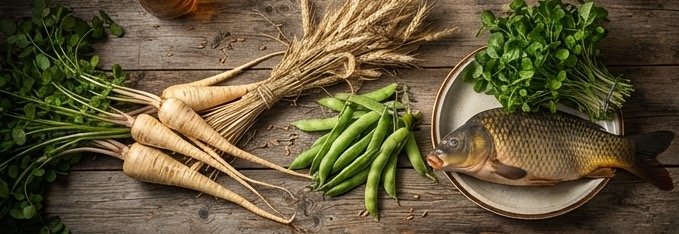
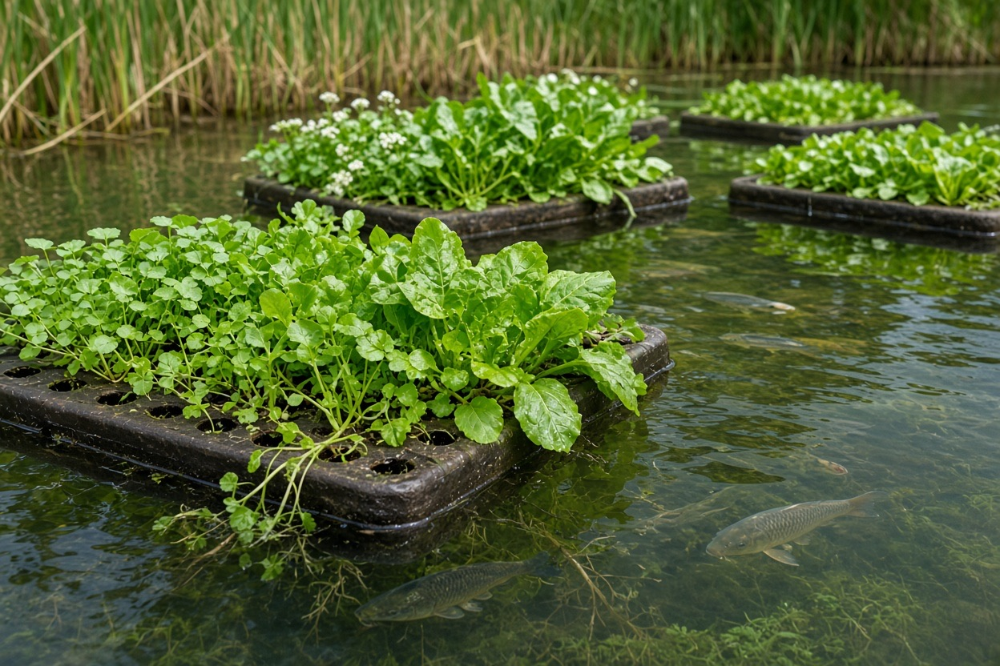

Anbau · Back to the RootsAlles, was der Acker kann – und mehr.
AR-AWS heißt nicht: nur noch Schilf und Kräuter. Auf den trockenen Ländchen, Bermen und angrenzenden Mineralböden wächst weiterhin alles, was heute auf dem Acker steht – Brotgetreide wie Roggen und Dinkel, Hafer, Gerste, Kartoffeln, Rüben, Erbsen, Gemüse. Neu dazu kommen die Schwimmbeete – schwimmende Äcker für genau diese Nutzpflanzen – sowie Fischteich und Paludikultur. Und es ist die Chance für ein Umdenken – zurück zu robusten, regionalen Sorten, die hier jahrhundertelang zu Hause waren:

Kartoffel→Pastinakefrosthart, süßlich, war vor der Kartoffel das Wurzelgemüse Europas
Hochleistungsweizen→Emmer & EinkornUrgetreide, genügsam, gefragt in Bio-Bäckereien
Importierte Soja→Ackerbohne, Erbse, WasserlinseEiweiß aus der Region, Stickstoff aus der Luft
Brot aus Importweizen→Luch-Roggen & Dinkelvom schwimmenden Acker, gebacken in der Region
Zuchtlachs→Schleie & Karauscheheimische Fische aus Havel und Elbe – keine Zuchtrassen
Mineralwolle→Rohrkolben & SchilfBau- und Dämmstoff direkt aus der nassen Fläche

Die 12 Säulen: Ackerbau auf dem Wasser
Die Schwimmbeete sind schwimmende Äcker – frei bepflanzbar, je nach Saison und Nachfrage, mit einer klugen Mischung: Getreide und klassische Ackerkulturen für Brot und Versorgung, dazu auf einem Teil der Beete wertvolles Frischgemüse wie Brunnenkresse, Salat und Kräuter, das für den Berliner Markt das meiste Geld bringt. So gleicht sich beides aus: Nutzen und Gewinn.
BrotRoggendas Brotgetreide der Mark
BrotWeizenBack- und Mehlweizen
BrotDinkelrobust, gefragt beim Bäcker
BrotEmmer & EinkornUrgetreide, Back to the Roots
GetreideGersteGraupen, Malz, Braugerste
GetreideHaferFlocken, Haferdrink
EiweißErbseEiweiß aus der Region
EiweißAckerbohnestatt Import-Soja
KnolleKartoffelder Klassiker
KnollePastinakedas Wurzelgemüse vor der Kartoffel
WurzelRüben, Möhren & LeinHofsortiment, Leinöl
FrischBrunnenkresse, Salat & Kräuterdas Geld-Beet für Berlin
Ackerkulturen auf Schwimmbeeten sind Neuland – erprobt sind schwimmende Gärten bisher vor allem mit Gemüse. Welche Sorten auf den Beeten welche Erträge bringen, ist eine Kernfrage des Pilotprojekts. Die trockenen Ländchen bleiben zusätzlich für herkömmlichen Ackerbau nutzbar.
„Und woher kommt dann unser Brot?“
- Moorböden sind nur ein kleiner Teil der Agrarfläche – in Deutschland rund 7 %. Die großen Getreideflächen auf Mineralböden bleiben, wie sie sind.
- Auf den meisten Moorböden wächst heute gar kein Brotgetreide, sondern Gras und Futter – im Luch vor allem Grünland.
- Der entwässerte Torf schwindet jedes Jahr. Die Böden sacken, Erträge brechen in Dürrejahren ein. Ohne Wasser verschwindet der Acker auf Dauer ohnehin.
- Getreide bleibt Teil des Systems: auf den trockenen Ländchen und auf den Schwimmbeeten. Dazu kommen Fisch, Fleisch, Gemüse und Eiweißpflanzen – mehr Lebensmittel aus derselben Fläche, nicht weniger.
Rund um die BeeteIm Teich leben nur heimische Fische aus Havel und Elbe – Schleie, Karausche, Rotfeder, Hecht – auf dem nassen Grünland weiden Wasserbüffel, am Ufer stehen Rohrkolben und Schilf als Baustoff.
Pflanzenschutz ohne Chemie
Weil die Beete frei bepflanzbar sind, lässt sich auf Schädlinge reagieren: Blüten wie Ringelblume oder Phacelia locken Nützlinge an, die Blattläuse und Raupen fressen; Duftpflanzen halten Schädlinge fern; die wechselnde Mischkultur verhindert, dass sich eine Plage überhaupt ausbreitet.
Chemischer Pflanzenschutz dreht sich dagegen im Kreis: Unkräuter und Schädlinge werden resistent – weltweit sind zahlreiche Arten dokumentiert, die gegen gängige Mittel unempfindlich geworden sind. Also wird mehr oder stärker gespritzt, und Rückstände landen in Gewässern und im Grundwasser. Dieselbe Spirale wie beim Entwässern – und derselbe Ausweg: mit der Natur arbeiten, nicht gegen sie.
Die Landschaft regelt sich selbstHecken, Erlen oder Pappeln werden nicht gepflanzt. Kehrt die Aue zurück, stellen sie sich an den Randzonen von allein wieder ein – wie früher. Wo Wiesenvögel wie die Großtrappe weite, offene Flächen brauchen, hält die Beweidung mit Wasserbüffeln und Rindern die Landschaft offen. Gepflanzt wird gezielt nur auf den Schwimmbeeten.